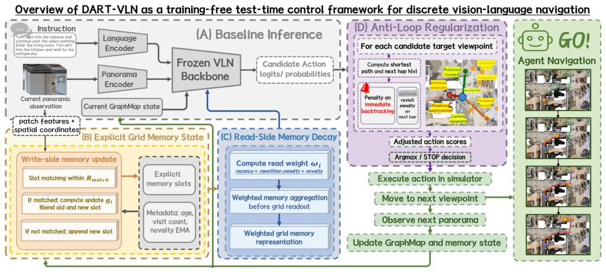
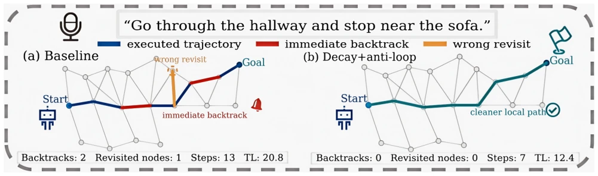

This paper serves a cup of "warm water" to the VLN field, neither heating nor adding ice, just stirring it gently. The authors found that existing memory mechanisms tend to have "too good memory" during testing, treating outdated information as treasures, leading to decision noise; or they like to "step in place" when selecting paths, walking back the way they came. DART-VLN did not fine-tune large models nor change the architecture, but performed two small moves: one is "memory decay", making old memories speak softer; the other is "anti-loop", preventing the robot from turning around immediately after taking a step. Experiments prove that this trick indeed saves steps and time on R2R and REVERIE. But then again, although this "test-time control" is lightweight, essentially it is "patching" old models; if the model itself is not smart enough, how much can external rules save? Moreover, it only targets discrete navigation, what about continuous space? However, for those unwilling to retrain, this is indeed a practical "external aid", at least without open training, one can get some performance boost for free.
The core difficulty of embodied navigation lies in sequence decision-making under partial observability [1]. Although discrete VLN methods based on memory or maps (such as GridMM [3]) improve long-range reasoning capabilities through explicit storage, there are still two stubborn problems during the inference stage. First is "information overload" during memory reading; if historical evidence is not attenuated in time, outdated or repeated observations will interfere with current decisions, causing memory aggregation to become noisy. Second is "local inefficiency" during action selection; even if the backbone network is powerful, the agent often exhibits immediate backtracking or short loops [13]-[15], which although not necessarily leading to failure, wastes steps and increases runtime. Existing improvements mostly rely on retraining or complex planning modules [8], [9], with high cost and strong invasiveness. This paper aims to answer: under the premise of no retraining and no architecture change, can performance be improved relying solely on lightweight test-time control? This hits the pain point of "frozen models" in actual deployment, attempting to exchange maximum benefit with minimum intervention, avoiding the trouble of reopening the training pipeline.
DART-VLN is a training-free test-time control framework embedded in a GridMM-style discrete navigation inference loop. The overall process does not modify backbone network parameters, only intervening in memory reading and action selection during inference. Memory decay targets the read side, each memory slot maintains metadata: age, access count, and novelty. Novelty is calculated smoothly through feature cosine similarity. When aggregating memory, read weights are dynamically calculated based on these metadata, the formula combines exponential decay (suppressing old information), repetition suppression (suppressing redundancy), and novelty reward. This is equivalent to "tuning" memory, not rewriting content, only changing its influence. Anti-loop regularization targets the action selection side, after calculating candidate action scores, apply penalty before argmax. The penalty term is based on the next hop on the graph: if the next hop directly returns to the previous step viewpoint (immediate backtracking), or frequently visits that next hop, then reduce the action score. This directly suppresses local oscillation behavior. The two combined form the main process. Additionally, write-side update variants were explored, but found that conservative read-side control is more stable. Algorithm 1 summarizes the inference flow, with no new learnable parameters.

Fig. 1. DART-VLN test-time pipeline for discrete VLN. The environment maintains explicit grid memory with optional write-side updates (update- only/full-mode). Read-side memory decay reweights memory during grid aggregation, and anti-loop regularization adjusts candidate action scores using next-hop penalties before argmax. No retraining or new learnable parameters are introduced.
Evaluated on R2R and REVERIE datasets, baseline is GridMM [3]. Main metrics include SR, SPL, trajectory length (TL), and runtime. Experiments show "decay only" provides stable gain on the read side, reducing NE and runtime. Full setting on R2R Val Unseen SPL from 64 to 66, TL shortened to 12.41; on REVERIE TL from 23.20 to 21.57, runtime significantly reduced, R2R from 937s to 666s. Compared update-only and full-mode, found write-side rewriting is less stable than read-side control. Behavior analysis shows anti-loop module significantly reduced immediate backtracking rate (R2R from 3.51% to 2.01%), confirming its direct contribution to path efficiency. Conclusion is lightweight test-time control can effectively improve frozen model performance and efficiency, without needing retraining.

Fig. 2. Qualitative local behavior under anti-loop regularization. Compared with the baseline, decay+anti-loop avoids immediate backtracking and wrong revisits, yielding a shorter local path.